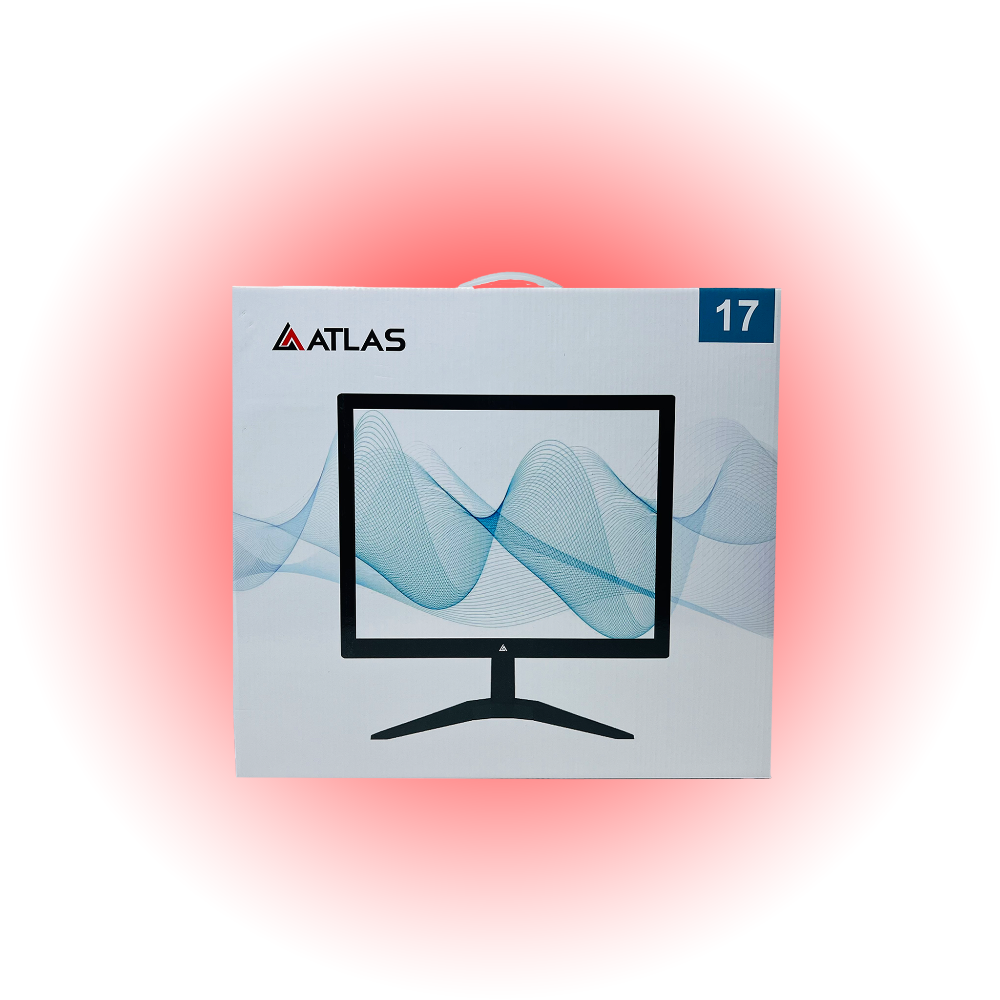
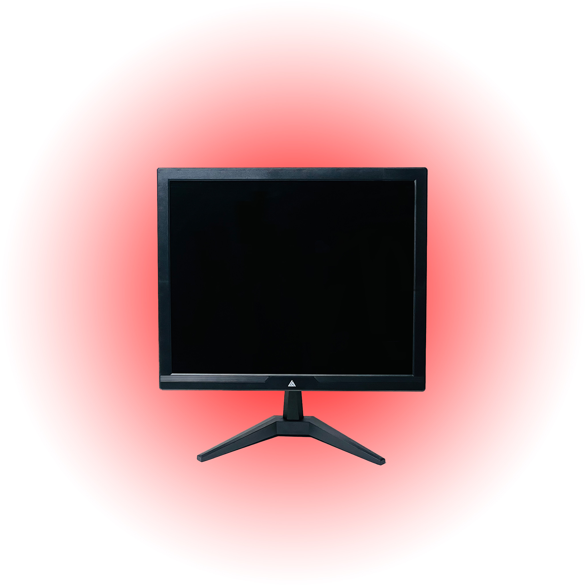
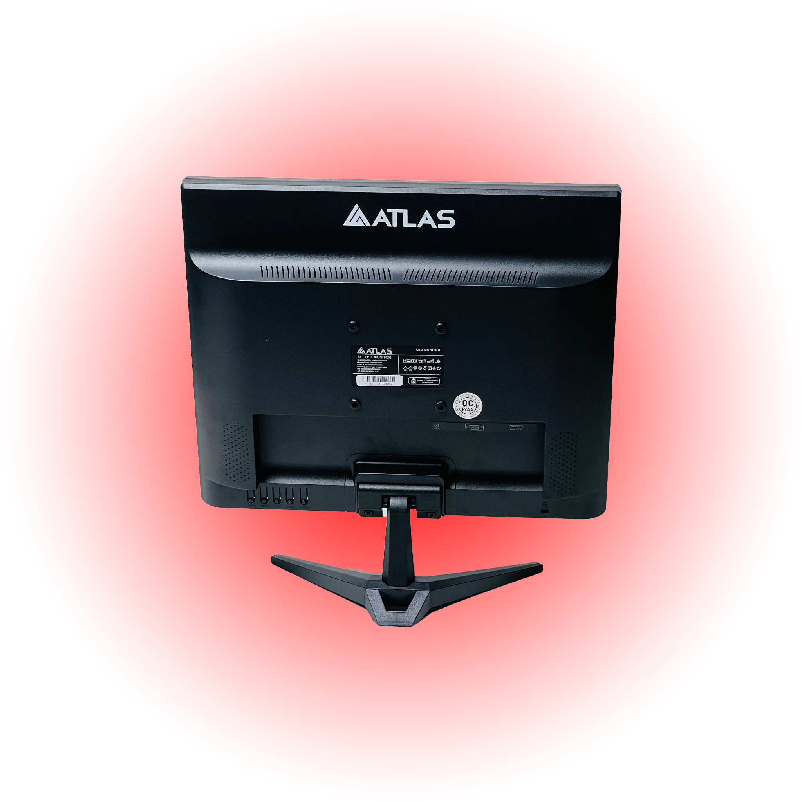

Monitor Series
ATLAS 17 Inch Square LED Monitor HDMI & VGA Support
High-Definition Display - 17-inch screen with 1280x1024 HD resolution for sharp visuals

Built for real-world performance.
High-Definition Display - 17-inch screen with 1280x1024 HD resolution for sharp visuals. Fast Response Time - 5ms response time for smooth, blur-free visuals during fast-moving scenes. Wide Viewing Angle - 178 horizontal and vertical viewing angles for consistent image quality from all positions. Anti-Glare Surface - Reduces reflections for comfortable, prolonged use, even in bright environments. Multiple Connectivity Options - Includes VGA, HDMI, and DC power input for versatile device compatibility.
High-Definition Display
17-inch screen with 1280x1024 HD resolution for sharp visuals
Fast Response Time
5ms response time for smooth, blur-free visuals during fast-moving scenes
Wide Viewing Angle
178 horizontal and vertical viewing angles for consistent image quality from all positions


High-Definition Display
- 17-inch screen with 1280x1024 HD resolution for sharp visuals
Fast Response Time
- 5ms response time for smooth, blur-free visuals during fast-moving scenes
Wide Viewing Angle
- 178 horizontal and vertical viewing angles for consistent image quality from all positions
Anti-Glare Surface
- Reduces reflections for comfortable, prolonged use, even in bright environments
| Feature | Details |
|---|---|
| SKU | ATS17T |
| Category | Monitor |
| Availability | In stock |
| High-Definition Display | 17-inch screen with 1280x1024 HD resolution for sharp visuals |
| Fast Response Time | 5ms response time for smooth, blur-free visuals during fast-moving scenes |
| Wide Viewing Angle | 178 horizontal and vertical viewing angles for consistent image quality from all positions |
| Anti-Glare Surface | Reduces reflections for comfortable, prolonged use, even in bright environments |
| Multiple Connectivity Options | Includes VGA, HDMI, and DC power input for versatile device compatibility |